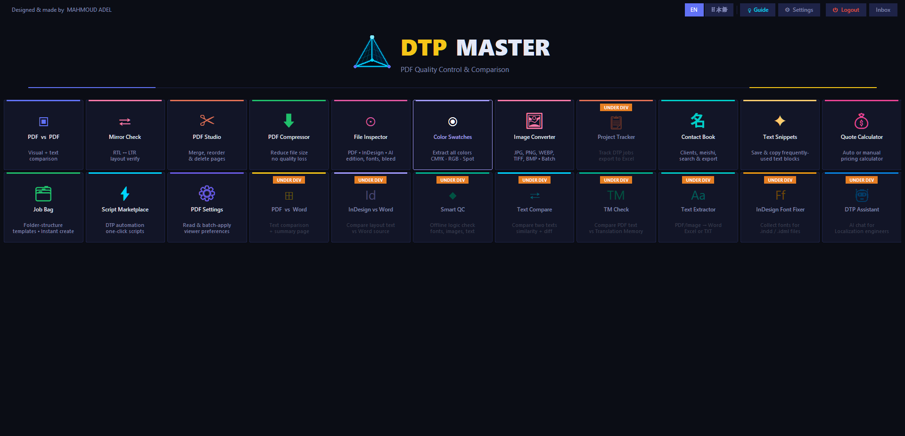

السلام عليكم こんにちは Hello
Arabic · Japanese · English
Multilingual production, interpretation, and IT support with sharp delivery.
I'm Mahmoud Adel, a Tokyo-based trilingual professional specializing in Arabic DTP, translation quality control, interpretation, IT support, and practical AI-powered workflows.
DTP & QC
Interpretation
Cloud & IT
Right-to-left layout, InDesign and Illustrator production, PDF checks, and print-ready multilingual documents.
02 InterpretationArabic-Japanese support for business communication, calls, emergencies, events, and cross-cultural moments.
03 IT & AI SystemsServer administration, device troubleshooting, cloud study, and custom productivity tools like DTP Master.
3 LanguagesArabic, Japanese, English
DTP + QCproduction discipline
AWS Trackcloud engineering study
Tokyoglobal work base
About Mahmoud
Multilingual production mind, interpreter instinct, and a serious eye for details.
My work sits between language, layout, and technology. I handle multilingual DTP operations, Arabic translation QC, Arabic-Japanese interpretation, and hands-on IT support for production environments.
I like practical systems: clean documents, clear communication, stable machines, and AI tools that actually save time instead of adding noise.
Arabic right-to-left composition
Japanese business communication
Translation quality checks
InDesign / Illustrator workflows
Server and hardware support
Volunteer and event interpretation
In three languages
- ARالدقة في كل تفصيلة.
- JA細部までこだわる。
- ENPrecision in every detail.
Experience
Work history with one theme: making complex communication usable.
SHAMS Co., Ltd.
DTP Operator & Arabic QC
Multilingual document production, Arabic translation QC, server administration, device maintenance, and daily IT support.
BeBorn Inc.
On-call Interpreter
Real-time Arabic-Japanese telephone interpretation for urgent, medical, housing, utility, and business situations.
EDJ Translation Company
Arabic Interpreter & Translator
Project-based Arabic interpretation and translation across Egypt and Japan-facing communication needs.
Toolbox
Skills that move between language, layout and systems.
A rare professional mix: linguistic precision, DTP discipline, hardware confidence, and cloud curiosity.
- Arabic DTP
- Japanese Interpretation
- InDesign
- Illustrator
- PDF Preflight
- Rare Mix
- Server Admin
- IT Repair
- AWS Study
- AI Power User
- PC Building
Featured project
DTP Master: a production helper built from real workflow pain.
DTP Master is a practical tool for document production work, designed around the repetitive checks and decisions that slow down multilingual desktop publishing.

The journey
From Cairo to Tokyo — a path that built a rare mix.
Three languages, two continents, one obsession with getting the details right.
-
Cairo · Egypt
Where it started
Born and raised in Egypt. Arabic mother tongue, an early curiosity for languages, and the patience that desktop publishing later demanded.
-
2017 — 2022
Falling into Japanese
Four years at Benha University studying Japanese language and literature. The first time three writing systems lived inside one notebook.
-
2024 — Tokyo
Moved to Japan
Landed in Tokyo to live the language, not just study it. One year at Tokyo Language and Culture Academy, then straight into production work.
-
2025 — present
Production in three scripts
DTP, Arabic QC, server admin, and on-call Arabic-Japanese interpretation. Every workday touches Arabic, Japanese, and English.
-
Today
The rare mix
Arabic + Japanese + English. DTP + Interpretation + IT.
A combination most teams cannot hire for in one person — and the reason this site exists.
Most teams hire one DTP operator, one interpreter, one IT person — and hope they talk to each other. With Mahmoud, all three live in the same head, and the result is just cleaner work.
Contact
Need Arabic, Japanese, DTP or IT help? Send the details.
This demo uses the same mailto-style contact behavior as the SHAMS static site, adapted for your portfolio.
- Emailm@mahmoud.jp
- LinkedInmahmoud-adel-jp
- GitHubMahmoudJP